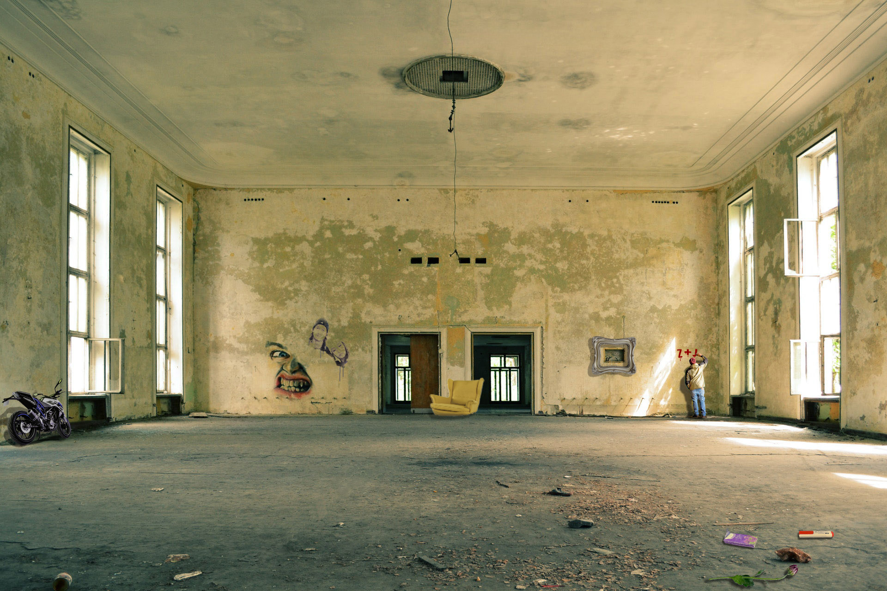
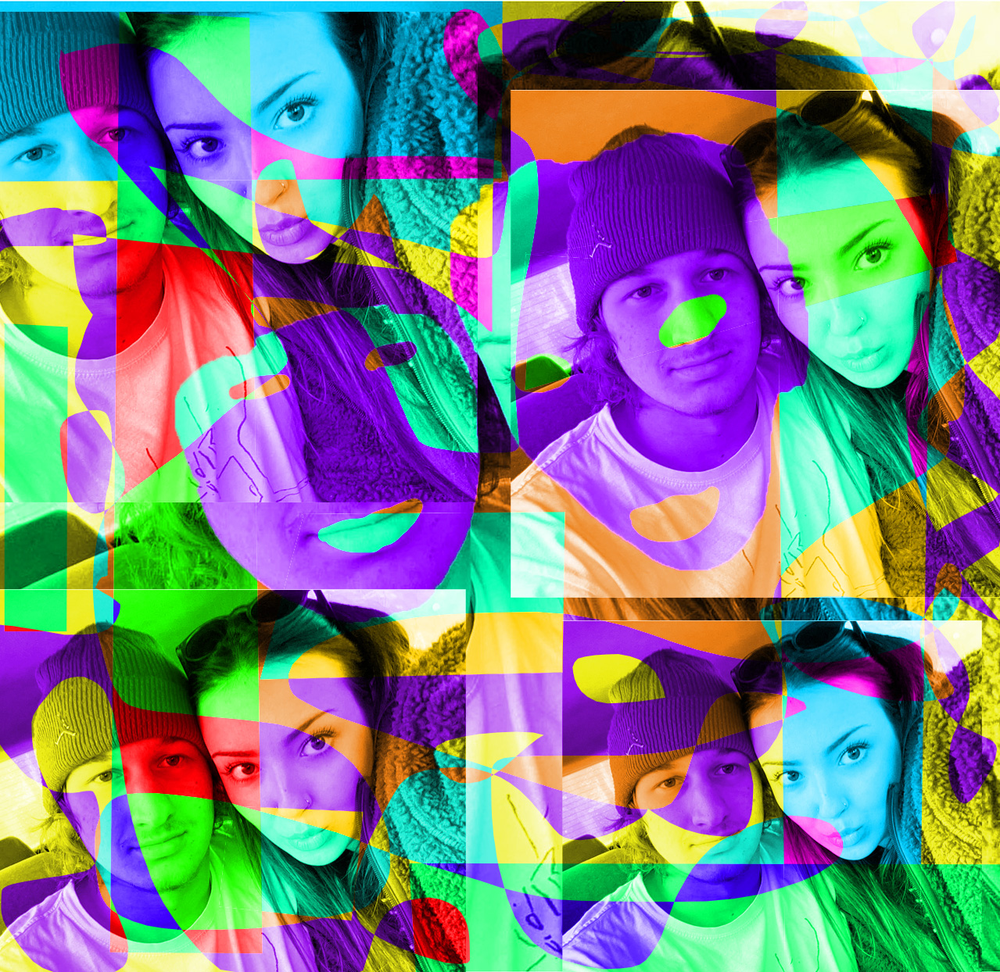
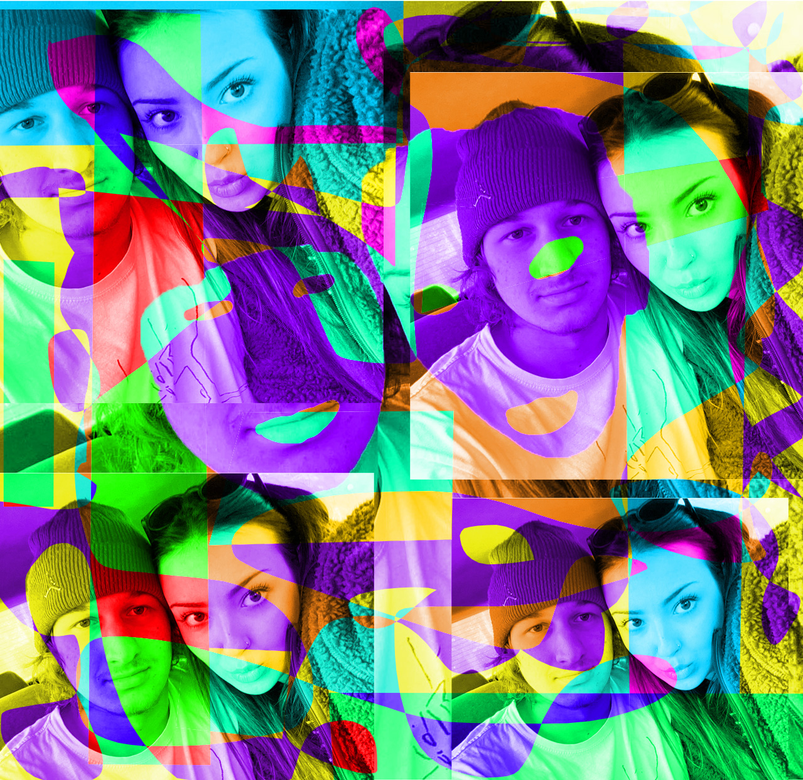

Moje ime je Josip Papić Maslać i student sam prve godine Grafičkog fakulteta. Od malih nogu sam bio fasciniran umjetnošću i tehnologijom, posebno sam bio fasciniran stop motion animacijom Studij grafičkog dizajna mi je pružio priliku da spojim te dvije strasti. Uvijek sam volio crtati i istraživati različite oblike vizualne komunikacije, što me je i usmjerilo prema ovom fakultetu. Jedan od najzanimljivijih aspekata mog studija je rad na praktičnim projektima poput ovog.
 
